Previous slide Next slide Toggle fullscreen Open presenter view
CEN429 Secure Programming · Week 6
Runtime Application Self-Protection (RASP)
CEN429 Secure Programming — Week 6
Asst. Prof. Dr. Uğur CORUH · 23.10.2026
RTEU Computer Engineering · 2026-2027 Fall
CEN429 Secure Programming · Week 6
Today
Hour
Section
Topic
1
1–3
What RASP is, RASP architecture · Integrity checking (self-hashing) Demo 1
2
4–6
Debugger detection Demo 2 · Environment/emulator detection Demo 3 · Hook/instrumentation detection Demo 4
3
7–10
Memory protection · Root/signature verification Demo 6-7 · Control-flow integrity Demo 5 · Response policy Demo 8 · Project
Learning outcome (LO.3): recognise RASP checks (integrity, anti-debug, environment, hooking) · design a response policy and device binding · explain RASP's limits and its ethical framework
RASP = Runtime Application Self-Protection : the application monitoring itself while it runs and responding to threats. Detect → defend → deter. But never a single check — a layer .
RTEU Computer Engineering · 2026-2027 Fall
CEN429 Secure Programming · Week 6
What We Bring from Earlier Weeks
The white-box attacker model — the user who owns the device may also be the attacker; they can read memory and attach a debugger (Week 1) Digest, MAC, and HMAC — a digest is a one-way fingerprint computed from data; HMAC proves a message hasn't changed using a shared secret key (Week 3) Deriving keys from a master secret (HKDF) — deriving new keys from a master secret through Extract and Expand steps (Week 3) Device binding — a secret being meaningful only on a specific device, the innermost layer of the security shell (Week 3)
This week: the white-box model → the MATE attacker model (Section 1); HMAC → verifying the application's own code (Section 3); HKDF → deriving a key from a device fingerprint (Section 10); device binding → part of a RASP response policy (Section 10).
RTEU Computer Engineering · 2026-2027 Fall
CEN429 Secure Programming · Week 6
This Week's Concepts
Each term is defined once, where it first appears in the body; here we only mark where .
Concept
Where
RASP (detect/defend/deter)
Section 1
The MATE attacker model
Section 1
RASP architecture (when/where/how)
Section 2
Integrity / self-hashing
Section 3
Debugger detection
Section 4
Emulator/VM detection
Section 5
Hook / LD_PRELOAD detection
Section 6
Dynamic memory protection
Section 7
Root indicator
Section 8
Component signature verification
Section 8
Control-flow counter
Section 9
Response policy and device binding
Section 10
RTEU Computer Engineering · 2026-2027 Fall
CEN429 Secure Programming · Week 6
1. What Is RASP?
RTEU Computer Engineering · 2026-2027 Fall
CEN429 Secure Programming · Week 6
A Brief History — the Application Protects Itself
1980s — the crack/anti-crack culture: the origin of anti-debug and self-checks2000s — DRM and mobile banking move protection inside the application2012 — Gartner coins the term RASP today — OWASP MASVS-RESILIENCE turns this into an auditable requirement
RASP is not a new idea: it is the name of the corporate answer to the MATE attacker .
RTEU Computer Engineering · 2026-2027 Fall
CEN429 Secure Programming · Week 6
WAF ↔ RASP — Diagram
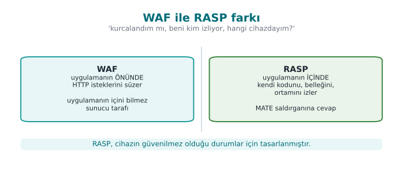
RTEU Computer Engineering · 2026-2027 Fall
CEN429 Secure Programming · Week 6
WAF ↔ RASP Comparison
Protection
Where It Stops
What It Sees
Network firewall
At the network edge
Packets
WAF (Web App Firewall)
In front of the applicationHTTP requests
RASP Inside the applicationIts own code, memory, environment
A WAF asks "is the incoming request malicious?"; RASP asks "have I been tampered with?"
RTEU Computer Engineering · 2026-2027 Fall
CEN429 Secure Programming · Week 6
The Attacker Model: MATE
MATE (Man-At-The-End): an attacker who owns the endpoint the application runs on . They read memory, modify code, and trace it with a debugger. Identical to the white-box model from Week 11.The hard truth: if the device's owner is the attacker, no client-side protection is ultimately unbreakable. So why does RASP exist? The goal is not unbreakability ; it's making the attack unscalable and expensive .
RTEU Computer Engineering · 2026-2027 Fall
CEN429 Secure Programming · Week 6
Three Jobs: Detect, Defend, Deter
Detect: sense the abnormal environment/behaviour (debugger, emulator, tampering).Defend: if there's a threat, restrict/halt the feature.Deter: make the attack costly → the attacker gives up.
RTEU Computer Engineering · 2026-2027 Fall
CEN429 Secure Programming · Week 6
The RASP Loop — Detect → Defend → Deter
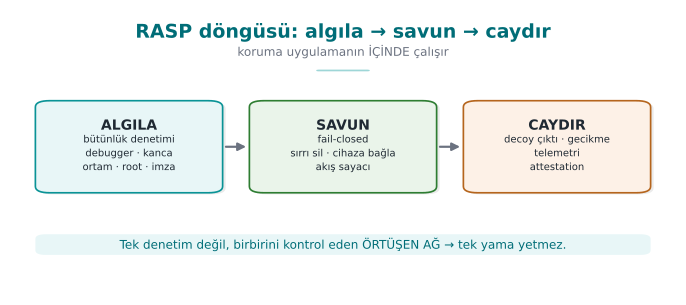
RTEU Computer Engineering · 2026-2027 Fall
CEN429 Secure Programming · Week 6
What Does RASP Complete?
Static protections (Weeks 4–5) apply without running .
Obfuscation (Weeks 9/11/14) makes understanding harder.
RASP adds active defence while the program runs .
Obfuscation hides RASP; RASP protects obfuscation while it runs.
RTEU Computer Engineering · 2026-2027 Fall
CEN429 Secure Programming · Week 6
Why Is RASP Necessary?
A white-box attacker runs the program and observes it (debugger, Frida).
Static obfuscation alone does not stop this.
RASP checks "am I being watched?" and responds.
RTEU Computer Engineering · 2026-2027 Fall
CEN429 Secure Programming · Week 6
The Main Rule (Up Front)
RASP is not unbreakable on its own; it gains strength from layered and varied checks.
A single "is it rooted?" check is easily bypassed; dozens of different checks together are hard.
RTEU Computer Engineering · 2026-2027 Fall
CEN429 Secure Programming · Week 6
2. RASP Architecture
RTEU Computer Engineering · 2026-2027 Fall
CEN429 Secure Programming · Week 6
When Does a Check Run?
At startup: environment check on launch.Right before a critical operation: immediately before payment/key use.Periodically: regularly, in the background.Randomly: at unpredictable moments (so the attacker can't time it).
RTEU Computer Engineering · 2026-2027 Fall
CEN429 Secure Programming · Week 6
Where Does a Check Run?
On the native side (C/C++): harder to reverse-engineer, preferred.On the managed side (Java): easier to read, but still necessary.Cross-checking: the two sides check each other.
RTEU Computer Engineering · 2026-2027 Fall
CEN429 Secure Programming · Week 6
The Cross-Check Idea
The Java side checks the native library's digest .
The native side checks the Java side's integrity .
The attacker has to bypass both at once .
RTEU Computer Engineering · 2026-2027 Fall
CEN429 Secure Programming · Week 6
Multi-Point Placement and Decoy Parameters
Multi-point placement: the same check done in many places in the code, each time in a slightly different form; when one point is patched, the others still run.Inside the protected function itself: a valuable function (e.g., key derivation) performs several checks of its own at its entry point — in the field this can reach close to fifteen checks.Decoy parameters: at an entry point, there can be extra parameters, hidden for readability, that trigger an integrity check (Week 4).
RTEU Computer Engineering · 2026-2027 Fall
CEN429 Secure Programming · Week 6
How Does a Check Run? (Hidden)
The check code is obfuscated (Week 9): so the attacker can't easily find it.
The result is opaque (not plain true/false).
The response can be delayed (more on this shortly).
RTEU Computer Engineering · 2026-2027 Fall
CEN429 Secure Programming · Week 6
Weak Design — a Single Decision Point
if (hata_ayiklayici_var() || root_var() || butunluk_bozuk())
return HATA;
anahtari_coz();
An attacker who flips a single comparison bypasses the entire protection .
RTEU Computer Engineering · 2026-2027 Fall
CEN429 Secure Programming · Week 6
Strong Design — Data Dependency
The check result feeds into the data of the next computation , not into an if:
Check results feed into key derivation (the correct key if clean, a different but plausible-looking key if not).
Check results are carried with opaque values (Week 4).
The response happens far in time and code from the trigger.
RTEU Computer Engineering · 2026-2027 Fall
CEN429 Secure Programming · Week 6
A Layered Network of Checks
Not a single check, but dozens of different checks.
A network that checks itself (a checker network).
Bypassing one triggers another.
RTEU Computer Engineering · 2026-2027 Fall
CEN429 Secure Programming · Week 6
Layers Protect Each Other — Diagram
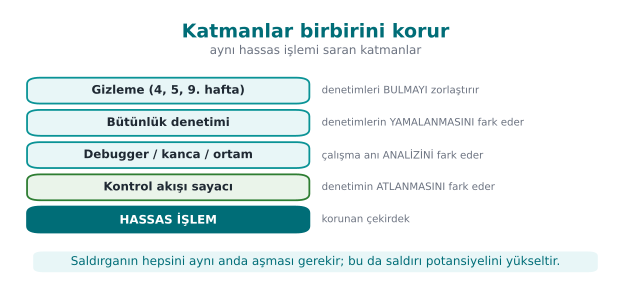
RTEU Computer Engineering · 2026-2027 Fall
CEN429 Secure Programming · Week 6
Architecture · Summary Diagram
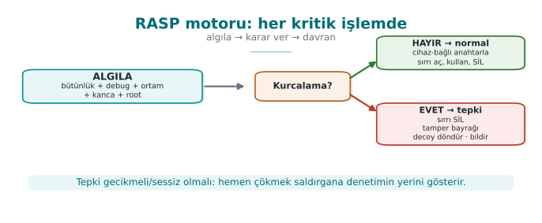
RTEU Computer Engineering · 2026-2027 Fall
CEN429 Secure Programming · Week 6
This Section's Rule (1–2)
Do not do the check in one place, at one moment, with one if .
Multi-point, cross-checked, hidden, and data-dependent checks together build a RASP architecture.
RTEU Computer Engineering · 2026-2027 Fall
CEN429 Secure Programming · Week 6
Section 1–2 — Quick Check
RASP's three jobs?
Why is cross-checking strong?
Why a network instead of a single check?
RTEU Computer Engineering · 2026-2027 Fall
CEN429 Secure Programming · Week 6
Section 1–2 — Answers
Detect (tampering/debugging/emulator), Defend (protect the key/data, restrict the feature), Deter (response: shut down/break/notify).Checks watch each other ; when the attacker disables one, another notices → silencing a single point isn't enough.
A single check is bypassed with a single patch ; an overlapping network requires breaking every node separately → it raises the cost of the attack .
RTEU Computer Engineering · 2026-2027 Fall
CEN429 Secure Programming · Week 6
3. Integrity Checking (Self-Hashing)
RTEU Computer Engineering · 2026-2027 Fall
CEN429 Secure Programming · Week 6
The Idea
The program computes a digest of its own code sections .
It compares it against the expected digest.
If it's been tampered with, the digest won't match → response.
RTEU Computer Engineering · 2026-2027 Fall
CEN429 Secure Programming · Week 6
How Does It Work? · Step by Step
After compilation, the digest of the critical code blocks is recorded .
While running, the program recomputes the digest of the same blocks.
It compares it against the recorded digest.
If there's a difference → tampering → response.
RTEU Computer Engineering · 2026-2027 Fall
CEN429 Secure Programming · Week 6
Step 1 · Record the Digest
After compilation finishes, the critical code/data region is identified.This region's digest is computed and stored as the golden value .
This value is the signature of the "untampered" state.
RTEU Computer Engineering · 2026-2027 Fall
CEN429 Secure Programming · Week 6
Step 2 · Recompute While Running
While running , the program recomputes the digest of the same recorded code/data region.This computation happens not at compile time, but at runtime .
It can be done not just once, but periodically .
RTEU Computer Engineering · 2026-2027 Fall
CEN429 Secure Programming · Week 6
Step 3 · Compare
The newly computed digest is compared against the recorded golden value .
The comparison must be done in constant time (not memcmp): a plain comparison stops at the first differing byte and leaks timing (Week 3).
If equal: integrity is fine .
RTEU Computer Engineering · 2026-2027 Fall
CEN429 Secure Programming · Week 6
Step 4 · Respond
If the digest doesn't match → tampering (a patch) has been detected.
The result is tied not directly to an if, but to a response (Section 10).
A smarter response is preferred over "crash immediately."
RTEU Computer Engineering · 2026-2027 Fall
CEN429 Secure Programming · Week 6
Self-Hashing — Diagram
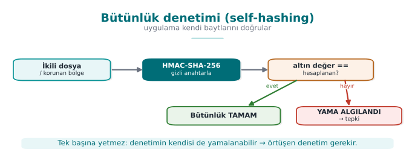
RTEU Computer Engineering · 2026-2027 Fall
CEN429 Secure Programming · Week 6
What Does It Catch?
A patch applied to the binary file.
Bytes changed to skip a check.
Injected code.
RTEU Computer Engineering · 2026-2027 Fall
CEN429 Secure Programming · Week 6
Demo 1 · Runtime Integrity Checking
code/week-06/01-butunluk-hmac — self-hashing, HMAC-SHA-256.
The textbook (Viega & Messier, Recipe 12.2) does this with CRC32 ; CRC32 is not cryptographic , an attacker can easily adjust bytes to make the CRC match. We use HMAC-SHA-256 (needs a secret key).
The program computes its own binary file's digest and records it as the golden value .
A copy of the binary file is made and one byte in it is changed (a patch simulation); the patched copy's digest is compared against the golden value.
RTEU Computer Engineering · 2026-2027 Fall
CEN429 Secure Programming · Week 6
Demo 1 · The Core of the Code
oz_yol(yol, sizeof (yol));
dosya_oku(yol, &veri, &boy);
kripto_hmac_sha256(RASP_ANAHTAR, 32 , veri, boy, ozet);
unsigned char fark = 0 ;
for (int i = 0 ; i < 32 ; i++)
fark |= beklenen[i] ^ ozet[i];
if (fark == 0 ) { } else { }
RTEU Computer Engineering · 2026-2027 Fall
CEN429 Secure Programming · Week 6
Demo 1 · Actual Output
ADIM 2 - Normal calisma: butunluk dogrulanir (yama yok)
Beklenen : bae498a6a982279a8...ee4d01e6
Hesaplanan : bae498a6a982279a8...ee4d01e6
SONUC: BUTUNLUK TAMAM - hedef degismemis.
ADIM 3 - Saldiri: kopyanin 1 bayti degistiriliyor
ADIM 4 - Yamali kopyanin HMAC'i karsilastiriliyor
Beklenen : bae498a6a982279a8...ee4d01e6
Hesaplanan : 05fb42748cb5b573...131c6705
SONUC: YAMA ALGILANDI - hedef degistirilmis!
Changing a single byte completely changed the digest (the avalanche effect).
RTEU Computer Engineering · 2026-2027 Fall
CEN429 Secure Programming · Week 6
⚠️ Self-Hashing Alone Is Not Enough
The attacker can find the digest function and force it to always say "match."
Or bypass the check with hardware breakpoints (van Oorschot et al.).
So: hide it, diversify it, cross-check it.
RTEU Computer Engineering · 2026-2027 Fall
CEN429 Secure Programming · Week 6
Strengthening It
The digest-checking code is hidden (Week 9).
Multiple blocks, overlapping regions.The result is not a plain comparison, it feeds into a computation (the check result affects the program's behaviour).
RTEU Computer Engineering · 2026-2027 Fall
CEN429 Secure Programming · Week 6
Overlapping Checks
One check also covers another check's code.
When the attacker disables one, the other breaks .
Bypassing from a single point becomes hard.
RTEU Computer Engineering · 2026-2027 Fall
CEN429 Secure Programming · Week 6
This Section's Rule (3)
Verify the integrity of critical code/data regions at runtime with a cryptographic digest (HMAC/signature), not CRC.
Don't do the check at a single point and only at startup; make it periodic, multiple, and overlapping .
RTEU Computer Engineering · 2026-2027 Fall
CEN429 Secure Programming · Week 6
4. Debugger Detection
RTEU Computer Engineering · 2026-2027 Fall
CEN429 Secure Programming · Week 6
Anti-Debug Approaches — Diagram
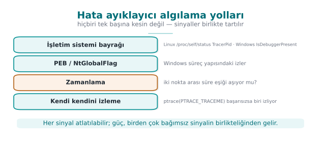
RTEU Computer Engineering · 2026-2027 Fall
CEN429 Secure Programming · Week 6
Why Is a Debugger Dangerous?
Debugger: a tool that runs a program step by step, halting it and reading its memory (gdb, lldb, x64dbg, WinDbg).The attacker halts the program, reads memory, changes values.
They can bypass checks one by one.
RASP checks "is a debugger attached to me?"
RTEU Computer Engineering · 2026-2027 Fall
CEN429 Secure Programming · Week 6
Detection Approaches for a Debugger (Concept)
Asking the operating system for "am I being traced?" information.
The state of specific debugging interfaces.
Timing: if an operation took much longer than expected, someone may be single-stepping it.
RTEU Computer Engineering · 2026-2027 Fall
CEN429 Secure Programming · Week 6
Environment
Indicator
Linux / WSL /proc/self/status → TracerPid (if > 0, we're being traced); is the parent process gdb/strace
Windows IsDebuggerPresent (PEB BeingDebugged); CheckRemoteDebuggerPresent; PEB NtGlobalFlag
From 2003 to today: SoftICE is dead, replaced by x64dbg/WinDbg/gdb/lldb/Frida ; ptrace+TracerPid is still valid.
RTEU Computer Engineering · 2026-2027 Fall
CEN429 Secure Programming · Week 6
Timing-Based Detection
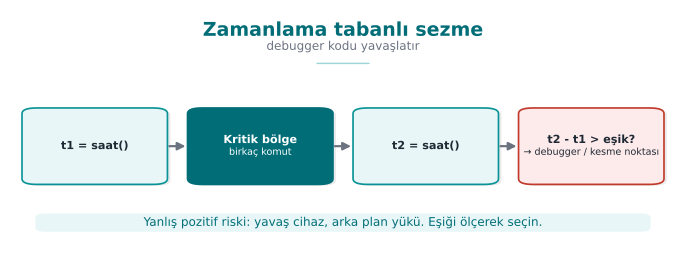
Debugger single-stepping slows down the work.
RTEU Computer Engineering · 2026-2027 Fall
CEN429 Secure Programming · Week 6
Demo 2 · Debugger Detection
code/week-06/02-hata-ayiklayici — anti-debug, read-only.
The program looks at several independent signals and changes nothing .
It doesn't even self-ptrace; it only reads /proc and PEB fields.
demo.sh runs the program first normally, then under gdb.
long tp = tracer_pid();
if (tp > 0 ) supheli++;
RTEU Computer Engineering · 2026-2027 Fall
CEN429 Secure Programming · Week 6
Demo 2 · Actual Output (WSL)
ADIM 1 - Normal calisma (hata ayiklayici YOK)
1) /proc/self/status TracerPid : 0 (izleyen yok)
2) Ana surec (parent) adi : sh
SONUC: Temiz - izleyen bir arac gorunmuyor.
ADIM 2 - gdb altinda calistir
1) /proc/self/status TracerPid : 2909 (IZLENIYOR)
SONUC: Hata ayiklayici/izleme ARACI algilandi (2 sinyal).
Without a debugger, TracerPid is 0 ; under gdb it came out 2909 (>0).
RTEU Computer Engineering · 2026-2027 Fall
CEN429 Secure Programming · Week 6
⚠️ The Detection–Counter-Detection Race
Anti-debug is a classic arms race : the attacker can turn ptrace into a no-op with LD_PRELOAD, patch IsDebuggerPresent's return value, or clear the PEB flag.
Every single method is known and can be bypassed .
Strength: many different methods + obfuscation + diversification.
The goal is still deterrence and delay .
RTEU Computer Engineering · 2026-2027 Fall
CEN429 Secure Programming · Week 6
What About the Response?
Crashing immediately is not always good (it tells the attacker "there's a check here").
Better: a delayed , indirect response (Section 10, shortly).
RTEU Computer Engineering · 2026-2027 Fall
CEN429 Secure Programming · Week 6
This Section's Rule (4)
Don't write anti-debug as a single if (IsDebuggerPresent()) exit();.
Collect multiple independent signals, tie the result to a behaviour, delay the response.
RTEU Computer Engineering · 2026-2027 Fall
CEN429 Secure Programming · Week 6
Section 3–4 — Quick Check
What does self-hashing catch?
Why isn't it enough alone?
How does timing give away a debugger?
RTEU Computer Engineering · 2026-2027 Fall
CEN429 Secure Programming · Week 6
Section 3–4 — Answers
Code/binary bytes being changed (a patch, breakpoint/code injection) — it computes its own digest at runtime and compares it against the expected one.The attacker can find/bypass the hash routine or the expected value, or NOP out the comparison; it also only catches a static change. Overlapping checks are needed.
A debugger/breakpoint slows down the code; if the elapsed time between two points crosses a threshold, debugging is sensed.
RTEU Computer Engineering · 2026-2027 Fall
CEN429 Secure Programming · Week 6
5. Environment Detection: Emulator/VM
RTEU Computer Engineering · 2026-2027 Fall
CEN429 Secure Programming · Week 6
Emulator False Positive — Diagram
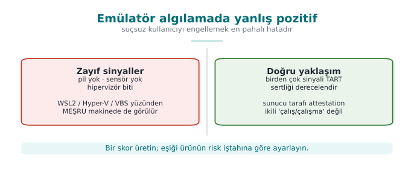
RTEU Computer Engineering · 2026-2027 Fall
CEN429 Secure Programming · Week 6
Why an Emulator?
Emulator/VM: a software environment that imitates a device (an Android emulator, QEMU).The attacker does their analysis in an emulator instead of a real device.
Halting, tracing, and resetting is easy in an emulator.
RASP checks "am I on a real device?"
RTEU Computer Engineering · 2026-2027 Fall
CEN429 Secure Programming · Week 6
Detection Clues (Concept)
Hardware/sensor gaps specific to emulators.
Typical fake identifiers.
The absence of features expected on a real device.
RTEU Computer Engineering · 2026-2027 Fall
CEN429 Secure Programming · Week 6
Detection Techniques (Concrete)
Technique
How
Note
CPUID hypervisor bit CPUID.1:ECX[31] — "hypervisor present"0 on bare metal
Hypervisor vendor signature CPUID leaf 0x40000000 → 12 charactersSome hypervisors hide it
Timing Measure an operation; heavy emulation slows it down a lot
Threshold varies by machine
RTEU Computer Engineering · 2026-2027 Fall
CEN429 Secure Programming · Week 6
Demo 3 · VM/Emulator and Timing
code/week-06/03-ortam-zamanlama — only reads a CPU instruction and the clock.
(A) CPUID.1:ECX[31] hipervizor biti : VAR
Hipervizor satici imzasi : (gizli/bos)
(B) 2.000.000 islem suresi : 0.806 ms
SONUC: Hipervizor GORULDU.
This output was captured on a real WSL2 machine.
RTEU Computer Engineering · 2026-2027 Fall
CEN429 Secure Programming · Week 6
⚠️ The Most Important Lesson: False Positives
The output above said the hypervisor "IS PRESENT."
But this is not an analysis environment — it's an ordinary developer machine!
On modern Windows, most machines report a hypervisor because of Hyper-V, WSL2, VBS .
RTEU Computer Engineering · 2026-2027 Fall
CEN429 Secure Programming · Week 6
The Cost of a False Positive
This bit alone does not mean "an attacker is analysing."
If an application refused to run just because it saw a hypervisor, it would block millions of legitimate users.
Legitimate users: developers, enterprise VM users, ordinary Windows users with WSL2/Hyper-V/VBS.
RASP always weighs multiple indicators and accepts that any single one can be bypassed .
RTEU Computer Engineering · 2026-2027 Fall
CEN429 Secure Programming · Week 6
Rule: a Risk Score, Not a Binary Decision
Use environment detection as a risk score .
Combine multiple indicators.Make the final decision together with a server-side risk engine .
RTEU Computer Engineering · 2026-2027 Fall
CEN429 Secure Programming · Week 6
How Is This Applied in the Field?
In the mobile world the equivalent is emulator detection : ro.kernel.qemu, fake sensors, typical IMEI/serial values.
The same principle applies: a signal, not proof .
Combination + server-side verification.
RTEU Computer Engineering · 2026-2027 Fall
CEN429 Secure Programming · Week 6
This Section's Rule (5)
In emulator/VM detection, a single bit never means "attack."
Use a risk score instead of a harsh response; the result is evaluated together with server-side verification.
RTEU Computer Engineering · 2026-2027 Fall
CEN429 Secure Programming · Week 6
6. Hook and Instrumentation Detection
RTEU Computer Engineering · 2026-2027 Fall
CEN429 Secure Programming · Week 6
Hook Detection — Diagram
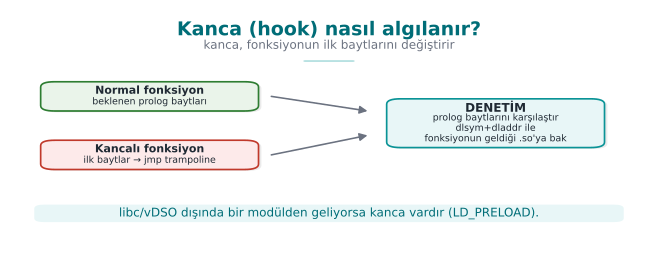
RTEU Computer Engineering · 2026-2027 Fall
CEN429 Secure Programming · Week 6
The Hook Threat
The attacker hooks a critical function: intercepts and changes the call.
Example: making the "is the signature valid?" function always return "yes."
Tool: Frida , Xposed.
Instrumentation: injecting code into a running program to observe/change its behaviour; Frida is the most common tool for this.
RTEU Computer Engineering · 2026-2027 Fall
CEN429 Secure Programming · Week 6
LD_PRELOAD Hooking
On Linux, loading a library before the program to replace functions.
The critical function is replaced with the attacker's version.
RASP checks the loaded libraries.
RTEU Computer Engineering · 2026-2027 Fall
CEN429 Secure Programming · Week 6
Hooking Techniques — Table
Technique
How
Platform
LD_PRELOAD Preloading a .so and replacing a function
Linux
PLT/GOT hooking Redirecting a call-table entry
Linux/ELF
Inline hooking Overwriting the first bytes with a jmp
Everywhere
Frida / Xposed Dynamic binary instrumentation
Mobile/desktop
RTEU Computer Engineering · 2026-2027 Fall
CEN429 Secure Programming · Week 6
Detection Approaches for a Hook (Concept)
Unexpected loaded libraries/modules.
Traces of known instrumentation tools (in memory, on ports).
Function addresses deviating from the expected.
RTEU Computer Engineering · 2026-2027 Fall
CEN429 Secure Programming · Week 6
⚠️ A Weak Approach: getenv
if (getenv("LD_PRELOAD" ) == NULL ) printf ("temiz\n" );
getenv itself can also be hooked to return NULL. That's why you need to verify the source :
Resolve the critical function (dlsym) → 2. find which module it comes from (dladdr) → 3. check whether it's legitimate → 4. decide .
RTEU Computer Engineering · 2026-2027 Fall
CEN429 Secure Programming · Week 6
Step 1 · Resolve the Function
void *p = dlsym(RTLD_DEFAULT, "time" );
dlsym finds, at runtime, which function would actually be called.If a preloaded hook exists, dlsym returns that one (a manipulated result).
RTEU Computer Engineering · 2026-2027 Fall
CEN429 Secure Programming · Week 6
Step 2 · Find the Source
Dl_info info;
dladdr(p, &info);
dladdr tells you which shared object (.so) an address comes from.It does not rely on getenv-style spoofing — it looks directly at the memory address.
RTEU Computer Engineering · 2026-2027 Fall
CEN429 Secure Programming · Week 6
Step 3 · Check Whether It's Legitimate
int kanca = !mesru_mi(info.dli_fname);
The expected source is libc , the vDSO , or the dynamic loader.
If it comes from a foreign .so → there's a hook .
RTEU Computer Engineering · 2026-2027 Fall
CEN429 Secure Programming · Week 6
Step 4 · Decide
If it's not in the list of legitimate sources → the hook flag is raised.
The result isn't left alone; it's tied to the response policy (Section 10).
It's repeated for multiple functions (a single function isn't enough).
RTEU Computer Engineering · 2026-2027 Fall
CEN429 Secure Programming · Week 6
Function Integrity
Are the critical function's first bytes what's expected?
A hook usually places a jump at the start → the bytes change.
If they've changed → there's a hook.
RTEU Computer Engineering · 2026-2027 Fall
CEN429 Secure Programming · Week 6
Demo 4 · LD_PRELOAD Hooking — Actual Output
ADIM 1 - Normal calisma (LD_PRELOAD yok)
time -> linux-vdso.so.1
getenv -> /lib/x86_64-linux-gnu/libc.so.6
SONUC: Temiz - preload/kanca gorunmuyor.
ADIM 2 - Saldiri: sahte kanca YALNIZ bu surece yukleniyor
time -> bin/linux/libsahtekanca.so (KANCA!)
time(NULL) dondurdu : 1234567890 (sabit sahte deger)
SONUC: Fonksiyon kancasi / preload ALGILANDI (2 sinyal).
In the clean run, time resolved from the kernel's vDSO — this is legitimate , not a hook.
RTEU Computer Engineering · 2026-2027 Fall
CEN429 Secure Programming · Week 6
⚠️ Hook Detection Can Also Be Bypassed
Advanced tools hide their traces.
Strength: multiple methods + obfuscation + server-side verification.
RTEU Computer Engineering · 2026-2027 Fall
CEN429 Secure Programming · Week 6
This Section's Rule (6)
In hook detection, don't trust manipulable sources like getenv(LD_PRELOAD).
Verify the source of critical functions (dlsym+dladdr); check multiple functions.
RTEU Computer Engineering · 2026-2027 Fall
CEN429 Secure Programming · Week 6
7. Dynamic Memory Protection
RTEU Computer Engineering · 2026-2027 Fall
CEN429 Secure Programming · Week 6
Memory Protection Layers — Diagram
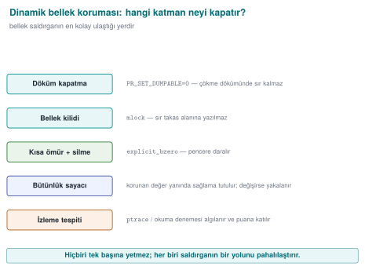
RTEU Computer Engineering · 2026-2027 Fall
CEN429 Secure Programming · Week 6
The Problem
Sensitive values (keys, counters) sit in memory.
The attacker can read/change memory and bypass a check.
RTEU Computer Engineering · 2026-2027 Fall
CEN429 Secure Programming · Week 6
What Does the Attacker Do With Memory?
Attack
Example
Target
Reading Dumping process memory, searching for a known value
Key, PIN, decrypted data
Changing Changing a counter/flag in memory
Logic and checks
Watching Tools that alert when a value changes
Discovering where variables live
All of these require the attacker to access process memory (debugger, OS interface, injected library).
RTEU Computer Engineering · 2026-2027 Fall
CEN429 Secure Programming · Week 6
The Protected Counter Idea
Instead of keeping a critical counter in the plain:
keep it together with a shadow copy + a digest .
check consistency on every read/write.
RTEU Computer Engineering · 2026-2027 Fall
CEN429 Secure Programming · Week 6
Protected Value · Concept
typedef struct {uint32_t deger; uint32_t golge; uint32_t ozet; } Korunan;
If the attacker changes only deger (value), the inconsistency is caught.
RTEU Computer Engineering · 2026-2027 Fall
CEN429 Secure Programming · Week 6
Memory-Scanning Detection
Is there unexpected access to sensitive regions being watched?
Traces of a memory dump/scan.
Goal: raise the cost of live memory analysis.
RTEU Computer Engineering · 2026-2027 Fall
CEN429 Secure Programming · Week 6
⚠️ Memory Protection Is Limited
A determined attacker can still get access.
Goal: delay , make the key short-lived (Week 10).
RTEU Computer Engineering · 2026-2027 Fall
CEN429 Secure Programming · Week 6
This Section's Rule (7)
Keep things in memory briefly, minimally, and scattered ; protect a critical value with a shadow copy + digest .
An inconsistency must be tied to a response — silently ignoring it defeats the protection.
RTEU Computer Engineering · 2026-2027 Fall
CEN429 Secure Programming · Week 6
Section 5–7 — Quick Check
Why is there a false-positive risk in emulator detection?
Why does a hook change function bytes?
What does a protected counter catch?
RTEU Computer Engineering · 2026-2027 Fall
CEN429 Secure Programming · Week 6
Section 5–7 — Answers
A legitimate user may also use a VM/emulator/CI ; weak signals also show up on real devices → the risk of blocking the innocent . Grade the severity of the response.
A hook changes the target's first bytes with a jump (jmp/trampoline) so the call diverts into the attacker's code → prologue bytes differ from expected.
A check in the control flow being skipped: the counter increases as critical checks run; if it doesn't reach the expected value, a check has been bypassed .
RTEU Computer Engineering · 2026-2027 Fall
CEN429 Secure Programming · Week 6
8. Root Environment and Signature Verification
RTEU Computer Engineering · 2026-2027 Fall
CEN429 Secure Programming · Week 6
From Root Indicator to Decision — Diagram
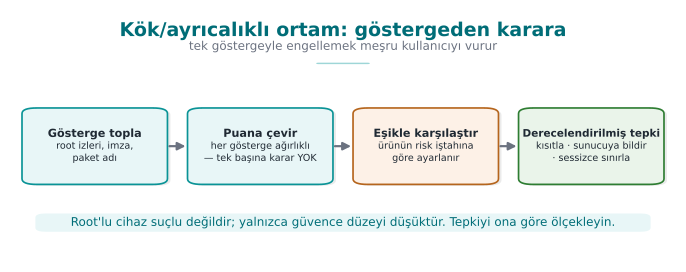
RTEU Computer Engineering · 2026-2027 Fall
CEN429 Secure Programming · Week 6
Why Is a Rooted Device a Risk?
Root = full privilege.
Protections weaken; the attacker gains access to memory, files, the process.
RASP checks "is the device rooted?"
RTEU Computer Engineering · 2026-2027 Fall
CEN429 Secure Programming · Week 6
Root Detection (Concept)
The presence of known root tools/files.
Being able to perform operations that are normally restricted.
System-integrity indicators.
RTEU Computer Engineering · 2026-2027 Fall
CEN429 Secure Programming · Week 6
⚠️ Root Detection Can Be Bypassed
Root hiding tools exist.
A single indicator isn't enough; many indicators + server-side verification.
Response: restrict the critical feature, not block everything (don't hurt the user).
RTEU Computer Engineering · 2026-2027 Fall
CEN429 Secure Programming · Week 6
Component Signature Verification
Is the caller's/loaded component's digital signature the expected one?
Catch it if a fake/modified application is calling the library.
Example: only the main application with the expected signature can use the SDK.
RTEU Computer Engineering · 2026-2027 Fall
CEN429 Secure Programming · Week 6
Signature + Digest Together
Signature: who published the component?
Digest: has the component changed?
Together they make forgery harder.
RTEU Computer Engineering · 2026-2027 Fall
CEN429 Secure Programming · Week 6
Demo 6 and 7 · Actual Outputs
# Demo 7 (kök/ayrıcalık göstergesi)
Ayricalik seviyesi : normal kullanici
[BULUNDU] cikti/sahte_su (ek isaret)
SONUC: Ayricalikli/riskli ortam GOSTERGESI var.
# Demo 6 (bileşen imzası)
Modul imzasi TUTMADI -> YENIDEN PAKETLENMIS.
Yukleme REDDEDILDI.
Both demos work by only reading/verifying ; they don't change the system.
RTEU Computer Engineering · 2026-2027 Fall
CEN429 Secure Programming · Week 6
This Section's Rule (8)
Root/privilege indicators are a signal, not proof — they're easily spoofed.
Cryptographically verify every dynamically loaded component before loading it; set up mutual verification where possible.
RTEU Computer Engineering · 2026-2027 Fall
CEN429 Secure Programming · Week 6
9. Control-Flow Integrity
RTEU Computer Engineering · 2026-2027 Fall
CEN429 Secure Programming · Week 6
Why Isn't a Single if Enough?
if (imza_gecerli()) devam();
The attacker patches this single branch → the check is skipped.
Week 9's opaque boolean + randomised exit is critical here.
RTEU Computer Engineering · 2026-2027 Fall
CEN429 Secure Programming · Week 6
Control-Flow Counter
Critical checks must pass in the correct order .
Every check updates a counter .
If the counter isn't the expected value at the end → one was skipped.
RTEU Computer Engineering · 2026-2027 Fall
CEN429 Secure Programming · Week 6
Control-Flow Counter — Diagram
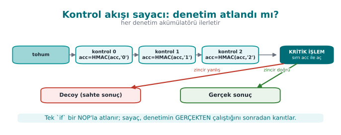
RTEU Computer Engineering · 2026-2027 Fall
CEN429 Secure Programming · Week 6
Dual Counters
Two independent counters (one increasing, one decreasing).
Their sum/relationship must stay fixed.
The attacker has to change both, consistently .
RTEU Computer Engineering · 2026-2027 Fall
CEN429 Secure Programming · Week 6
Tie the Result to a Behaviour
The check result is not a plain if.
The result feeds into the computation of the next step (e.g., a key derivation).
If skipped, the program behaves incorrectly (breaks silently).
RTEU Computer Engineering · 2026-2027 Fall
CEN429 Secure Programming · Week 6
Demo 5 · Skip Attack — Actual Output
SENARYO 1 - Normal: kontroller sirayla calisir
SONUC: ODEME ONAYLANDI -> "ODEME-ONAYI-TOKEN-4242"
SENARYO 2 - Saldiri: kontroller tamamen ATLANIR
(uyari: sayac=0 iz=0x0 beklenen=3/0x7)
SONUC: ODEME REDDEDILDI (zincir anahtari yanlis). decoy doner
SENARYO 4 - Saldiri: kontroller YANLIS SIRADA calisir
SONUC: ODEME REDDEDILDI (zincir anahtari yanlis). decoy doner
When checks are skipped or their order is broken, the chain comes out different; the real result couldn't be produced .
RTEU Computer Engineering · 2026-2027 Fall
CEN429 Secure Programming · Week 6
This Section's Rule (9)
Don't tie critical decisions to a single boolean (it gets patched).
Tie security checks to a control-flow counter and, where possible, to a data dependency .
RTEU Computer Engineering · 2026-2027 Fall
CEN429 Secure Programming · Week 6
10. Response Policy and Deterrence
RTEU Computer Engineering · 2026-2027 Fall
CEN429 Secure Programming · Week 6
Response policy: deciding what RASP does once it sees a threat.It tells the attacker "the check is exactly here."
It makes finding and bypassing the check easier.
Smarter responses are needed.
RTEU Computer Engineering · 2026-2027 Fall
CEN429 Secure Programming · Week 6
Examples of Good Responses
Delayed: trigger the response later, somewhere else (hide the source).Indirect: silently break the feature (produce a wrong result).Notify the server: raise the risk score, reject the operation server-side.
RTEU Computer Engineering · 2026-2027 Fall
CEN429 Secure Programming · Week 6
Response Strategies — Table
Strategy
What It Does
Fail-closed Reject the operation when in doubt, don't fall back to a trusting default
Erase the secret Securely erase the valuable data the instant tampering is found
Decoy output Return a random/fake result instead of crashing
Delayed/implicit response Separate the response from the trigger, in time/distance
Device/version binding Bind the secret to the device/version
Telemetry/attestation Report the event to the server; let the server's risk engine decide
RTEU Computer Engineering · 2026-2027 Fall
CEN429 Secure Programming · Week 6
Designing the Response
Don't break the user experience (false-positive risk).
A harsh response only on a high-confidence indicator.
In most cases: restrict + server-side verification.
RTEU Computer Engineering · 2026-2027 Fall
CEN429 Secure Programming · Week 6
The Detect → Decide → Respond Loop
Demo 8 (code/week-06/08-tamper-yanit) combines this loop into a single self-protection engine :
A series of checks run (integrity, anti-debug, environment...).
The secret is wrapped with a device-bound key (HKDF + AES-GCM).
When tampering is detected, the engine erases the secret, raises a flag, and returns a decoy .
RTEU Computer Engineering · 2026-2027 Fall
CEN429 Secure Programming · Week 6
Step A · Detect (Scenario 1 — Normal)
SENARYO 1 - Normal: kontroller gecer, cihaz dogru -> sir acilir
SONUC: TEMIZ. Sir acildi ve islem yapiliyor
-> "ODEME-ANAHTARI-7C4A"
(sir kullanildiktan sonra bellekten guvenle silindi)
Checks passed , the device was correct → the secret was opened, used, and immediately erased .
RTEU Computer Engineering · 2026-2027 Fall
CEN429 Secure Programming · Week 6
Step B · Decide (Scenario 2 — Tamper)
SENARYO 2 - Tamper: bir kontrol basarisiz -> sil + decoy + bayrak
SONUC: TAMPER ALGILANDI -> algilama kontrolu basarisiz
Politika: sir silindi, tamper bayragi kaldirildi,
olay kaydedildi.
Cokmek yerine SAHTE (decoy) sonuc dondu: 60797327...
One check failed → the engine decided : erase + log + decoy.
RTEU Computer Engineering · 2026-2027 Fall
CEN429 Secure Programming · Week 6
Step C · Respond (Scenario 3 — a Different Device)
SENARYO 3 - Baska cihaz: kontroller gecer ama
cihaz anahtari tutmaz
SONUC: TAMPER ALGILANDI -> cihaz/surum baglama tutmadi
(klonlama?) ... decoy doner
Even though checks passed, the device-bound key didn't match → the secret couldn't be opened . This is the innermost layer of Week 3's security shell.
RTEU Computer Engineering · 2026-2027 Fall
CEN429 Secure Programming · Week 6
Device Binding — Diagram
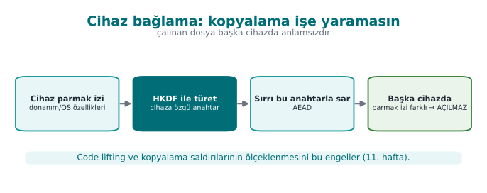
RTEU Computer Engineering · 2026-2027 Fall
CEN429 Secure Programming · Week 6
Device Binding
The key/data is meaningful only on a specific device .
If copied (to another device), it's useless.
A defence against code lifting (Weeks 9/11).
RTEU Computer Engineering · 2026-2027 Fall
CEN429 Secure Programming · Week 6
The Device-Binding Flow · Step by Step
Step 1 — read the fingerprint: the device's hardware/OS fingerprint is read (Week 5).
Step 2 — derive a key: a key is derived from the fingerprint + version string with HKDF ; the secret is wrapped with this key using AES-GCM .
Step 3 — if moved, try to open: even if the file is copied to another device, that device's fingerprint is different , so the derived key won't match → the secret cannot be opened .
RTEU Computer Engineering · 2026-2027 Fall
CEN429 Secure Programming · Week 6
Deterrence · the Ultimate Goal
RASP does not make the attack impossible ; it makes it costly and risky .
Enough layers + server-side verification → the attacker gives up or gets caught.
RTEU Computer Engineering · 2026-2027 Fall
CEN429 Secure Programming · Week 6
Response: How Do You Decide?
How reliable is the indicator? Highly reliable → reject + notify the server. Uncertain → continue, raise the risk score.Will it affect the user experience? If the false-positive risk is high, don't respond harshly ; prefer silent restriction + server-side verification.Does the response give away the check? Crashing immediately reveals the source; a delayed/indirect response hides it.
RTEU Computer Engineering · 2026-2027 Fall
CEN429 Secure Programming · Week 6
Response Flow · At a Glance
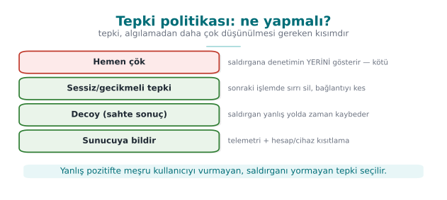
RTEU Computer Engineering · 2026-2027 Fall
CEN429 Secure Programming · Week 6
This Section's Rule (10)
Separate the response from the trigger: an immediate exit() hands the attacker a map.
The instant tampering is found, erase the secret, return a decoy instead of crashing, report the event to the server, bind the secret to the device.
RTEU Computer Engineering · 2026-2027 Fall
CEN429 Secure Programming · Week 6
Section 8–10 — Quick Check
Why is a rooted device a risk?
Why does a counter strengthen a single if?
Why can "crash immediately" be a bad response?
RTEU Computer Engineering · 2026-2027 Fall
CEN429 Secure Programming · Week 6
Section 8–10 — Answers
Root/jailbreak removes the barriers against reading/writing memory, hooking, and certificate injection → RASP's assumptions and isolation collapse.A single if is bypassed with a NOP/patch; the counter verifies after the fact that the check actually ran (distributed proof) → a single patch isn't enough.
"Crash immediately" shows the attacker exactly where the check is, and on a false positive it hits a legitimate user. A delayed/silent/deceptive response is better.
RTEU Computer Engineering · 2026-2027 Fall
CEN429 Secure Programming · Week 6
11. Limits and Ethics
RTEU Computer Engineering · 2026-2027 Fall
CEN429 Secure Programming · Week 6
RASP's Limits
Every single check can be bypassed .
Its strength decreases on a rooted device.
A false positive → a real user can be hurt.
Maintenance cost is high (tools evolve).
RTEU Computer Engineering · 2026-2027 Fall
CEN429 Secure Programming · Week 6
RASP's Limits — Diagram
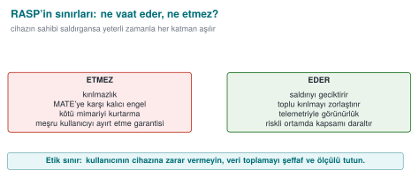
RTEU Computer Engineering · 2026-2027 Fall
CEN429 Secure Programming · Week 6
That's Why RASP Is...
Layered (many checks), diversified , hidden .Combined with server-side verification (the real guarantee).
Claiming it's "unbreakable" on its own is wrong .
RTEU Computer Engineering · 2026-2027 Fall
CEN429 Secure Programming · Week 6
Ethics and the User
RASP runs on the user's device; excessive data collection is not ethical.
A false positive can deny the user service → respond carefully.
A balance between transparency and privacy.
RTEU Computer Engineering · 2026-2027 Fall
CEN429 Secure Programming · Week 6
⚠️ The Safe-Example Rule
Course demos do not harm the student's device.
No real root/system change; synthetic indicators.
The goal is teaching the concept, not building an attack tool.
RTEU Computer Engineering · 2026-2027 Fall
CEN429 Secure Programming · Week 6
End to End: Building a RASP Layer
Let's protect a synthetic "license check" with RASP:
integrity checking
debugger checking
a smart response
RTEU Computer Engineering · 2026-2027 Fall
CEN429 Secure Programming · Week 6
Step 1 · The Point to Protect
int lisans_gecerli (void ) {
return sonuc;
}
This function and the flow that calls it are critical.
RTEU Computer Engineering · 2026-2027 Fall
CEN429 Secure Programming · Week 6
Step 2 · Add an Integrity Check
After compilation, record this region's digest.
Recompute and compare while running.
A difference → raise the tampering flag.
RTEU Computer Engineering · 2026-2027 Fall
CEN429 Secure Programming · Week 6
Step 3 · Add Anti-Debug
"Am I being watched?" via timing + OS indicators.
Don't leave the result alone; combine it with another check.
RTEU Computer Engineering · 2026-2027 Fall
CEN429 Secure Programming · Week 6
Step 4 · Tie the Result to a Behaviour
lisans_gecerli's result is not plain true/false.The integrity + anti-debug indicators feed into the result's computation .
If there's tampering, the function behaves incorrectly .
RTEU Computer Engineering · 2026-2027 Fall
CEN429 Secure Programming · Week 6
Step 5 · Response
Instead of crashing immediately: report the flag to the server, restrict the feature.
Delayed trigger: hide the source.
RTEU Computer Engineering · 2026-2027 Fall
CEN429 Secure Programming · Week 6
Step 6 · Obfuscate and Diversify
Obfuscate the check code (Week 9).
Place it differently in every version (diversification).
Add a cross-check.
RTEU Computer Engineering · 2026-2027 Fall
CEN429 Secure Programming · Week 6
Step 7 · Measure and Document
How many checks, where, and what response?
Performance cost (checks slow things down).
Write it up in S10.
RTEU Computer Engineering · 2026-2027 Fall
CEN429 Secure Programming · Week 6
Attacker and Defender: A Dialogue
RTEU Computer Engineering · 2026-2027 Fall
CEN429 Secure Programming · Week 6
Why This Dialogue?
Security is a move-countermove game.
Every defence gets an attack, every attack gets a new defence.
This is why layered defence is necessary.
RTEU Computer Engineering · 2026-2027 Fall
CEN429 Secure Programming · Week 6
Integrity · Dialogue
Defence: add self-hashing.Attacker: find the digest function, force it to always say "match."Defence: obfuscate the digest check, overlap it, tie the result to a behaviour.
RTEU Computer Engineering · 2026-2027 Fall
CEN429 Secure Programming · Week 6
Anti-Debug · Dialogue
Defence: add a debugger check.Attacker: find the check, bypass it.Defence: many methods + timing + obfuscation; make the response delayed.
RTEU Computer Engineering · 2026-2027 Fall
CEN429 Secure Programming · Week 6
Hook · Dialogue
Defence: check the function's bytes.Attacker: hide the hook, restore the bytes.Defence: cross-checking + server-side verification.
RTEU Computer Engineering · 2026-2027 Fall
CEN429 Secure Programming · Week 6
Root · Dialogue
Defence: check root indicators.Attacker: use a root-hiding tool.Defence: many indicators + a server-side risk score; restriction instead of a harsh response.
RTEU Computer Engineering · 2026-2027 Fall
CEN429 Secure Programming · Week 6
The Lesson From the Dialogue
A single defence is always eventually bypassed.
Strength: multiplicity + secrecy + diversity + the server .
Goal: make the attack no longer economical .
RTEU Computer Engineering · 2026-2027 Fall
CEN429 Secure Programming · Week 6
RASP Check Catalogue (1)
Check
What It Catches
Limit
Integrity (self-hash)
A binary patch
The digest fn. can be bypassed
Anti-debug
A debugger attached
Known methods get bypassed
Emulator
A fake environment
False positives
RTEU Computer Engineering · 2026-2027 Fall
CEN429 Secure Programming · Week 6
RASP Check Catalogue (2)
Check
What It Catches
Limit
Hook/Frida
A function hook
Hidden tools
Root
Privilege escalation
Root hiding tools
Signature
A fake component
If the key leaks
CFI counter
A skipped check
A sophisticated patch
RTEU Computer Engineering · 2026-2027 Fall
CEN429 Secure Programming · Week 6
The Lesson From the Catalogue
Every check has a blind spot .
None of them is enough alone.
Choose several from the catalogue, combine them, diversify them.
RTEU Computer Engineering · 2026-2027 Fall
CEN429 Secure Programming · Week 6
Choosing Checks
How many layers, based on the asset's value?
Which checks make sense for the platform?
What's the performance budget?
Write the decision and its rationale in S10.
RTEU Computer Engineering · 2026-2027 Fall
CEN429 Secure Programming · Week 6
Common Mistakes
Relying on a single check.
Not obfuscating the check (easily found).
A "crash immediately" response (gives away the source).
A harsh response + a high false-positive rate (hurts the user).
Skipping server-side verification (the real guarantee is there).
RTEU Computer Engineering · 2026-2027 Fall
CEN429 Secure Programming · Week 6
12. Project: This Week (S10)
RTEU Computer Engineering · 2026-2027 Fall
CEN429 Secure Programming · Week 6
Project · S10 (RASP + Response)
[ ] At least two different RASP checks (e.g., integrity + anti-debug).
[ ] Checks are hidden and diversified .
[ ] Document cross-checking (Java ↔ native), if any.
[ ] Document when/where the checks run.
[ ] The response policy is smart (delayed/indirect — not "crash immediately").
[ ] The device-binding decision and its rationale.
[ ] Is there server-side verification?
[ ] A false-positive plan.
[ ] Limits and residual risk (what it doesn't protect).
RTEU Computer Engineering · 2026-2027 Fall
CEN429 Secure Programming · Week 6
Through the Evaluator's Eyes
"RASP exists" isn't enough; how many layers, how hidden, what response ?
How does it combine with server-side verification?
How is the false-positive risk managed?
RTEU Computer Engineering · 2026-2027 Fall
CEN429 Secure Programming · Week 6
Solved Self-Check
RTEU Computer Engineering · 2026-2027 Fall
CEN429 Secure Programming · Week 6
Question 1
What are RASP's three jobs?
Answer: Detect (abnormal environment/tampering), defend (restrict/halt the feature), deter (raise the cost).
RTEU Computer Engineering · 2026-2027 Fall
CEN429 Secure Programming · Week 6
Question 2
What does self-hashing catch, and why isn't it enough alone?
Answer: It catches a patch/tampering applied to the binary. It isn't enough alone because the attacker can find and bypass the digest function; obfuscation + cross-checking + overlapping checks are needed.
RTEU Computer Engineering · 2026-2027 Fall
CEN429 Secure Programming · Week 6
Question 3
Why is cross-checking strong?
Answer: Java checks native, native checks Java; the attacker has to bypass both at once .
RTEU Computer Engineering · 2026-2027 Fall
CEN429 Secure Programming · Week 6
Question 4
How does timing-based anti-debug work?
Answer: If a small piece of work took much longer than expected, someone may be single-stepping the program (a debugger).
RTEU Computer Engineering · 2026-2027 Fall
CEN429 Secure Programming · Week 6
Question 5
Why does a control-flow counter strengthen a single if check?
Answer: It counts that checks passed in the correct order; patching a single branch breaks the counter, and the skip is caught.
RTEU Computer Engineering · 2026-2027 Fall
CEN429 Secure Programming · Week 6
Question 6
Why isn't "crash immediately" always a good response?
Answer: It shows the attacker exactly where the check is. A delayed/indirect response + server notification is better.
RTEU Computer Engineering · 2026-2027 Fall
CEN429 Secure Programming · Week 6
Question 7
Why does the false-positive risk matter in emulator detection?
Answer: A real device/developer environment can look like an emulator; a harsh response hurts a real user.
RTEU Computer Engineering · 2026-2027 Fall
CEN429 Secure Programming · Week 6
Question 8
What is RASP's fundamental limit?
Answer: Every single check can be bypassed; it weakens on a rooted device. Strength comes from layering, diversity, and server-side verification.
RTEU Computer Engineering · 2026-2027 Fall
CEN429 Secure Programming · Week 6
Quiz-1-Style Sample Questions
RTEU Computer Engineering · 2026-2027 Fall
CEN429 Secure Programming · Week 6
Example · Multiple Choice
What is the goal of RASP cross-checking?
A) Shrinking the code
RTEU Computer Engineering · 2026-2027 Fall
CEN429 Secure Programming · Week 6
Example · Short Answer
Name three methods that strengthen an integrity check.
Obfuscation · multiple/overlapping blocks · cross-checking · tying the result to a behaviour.
RTEU Computer Engineering · 2026-2027 Fall
CEN429 Secure Programming · Week 6
Glossary
Term
Meaning
RASP
Runtime self-protection
MATE
The attacker at the endpoint (the device's owner)
Self-hashing
Checking a digest of one's own code
Hook/Frida
Intercepting and changing a function call
CFI counter
Verifying check order by counting
Device binding
Binding data to a specific device (with HKDF)
Decoy
A fake result returned instead of crashing
Fail-closed
Rejecting an operation when in doubt
Attestation
Server-side proof of integrity
RTEU Computer Engineering · 2026-2027 Fall
CEN429 Secure Programming · Week 6
Next Week
Week 7 — Interim Project Demos (RAP1) and Week 8 — Quiz-1
In Week 7 you will present this week's RASP checks (integrity checking, debugger/environment/hook detection, the control-flow counter, the response policy) live in your project. Week 8 is Quiz-1, covering weeks 1–6.
Then Week 9 — Advanced Obfuscation and Diversification continues by deepening this week's debugger/environment detection ideas and its "obscurity/deterrence is not unbreakability" theme on the code-obfuscation side.
This week in one sentence: RASP monitors itself while the program runs and responds to threats; it gains its strength not from a single check but from layered, diversified, hidden checks and server-side verification. The real guarantee: layered RASP + obfuscation + short-lived keys + server-side verification — a time game played against the attacker.
RTEU Computer Engineering · 2026-2027 Fall
Speaker note: This week the focus shifts from "hardening the program" to "the program protecting itself while it runs." Core assumption: the device's owner is the attacker (MATE). Core idea: don't rely on a single check — detection + response + device binding.
Speaker note: This week we cover runtime protections (RASP). Zero prior knowledge assumed; we will define every term. Core framework: RASP detects, defends, deters — but never alone, always layered.
Speaker note: Next, integrity checking.
Speaker note: Next, emulator and hook detection.
Speaker note: Next, root/signature, control-flow integrity, response.
Speaker note: Next, limits, ethics, the project.
Speaker note: We build integrity + anti-debug + response step by step in a synthetic example.
Speaker note: For every check, we show the "what does the attacker do → what does the defence add" loop. This makes concrete why layered defence is necessary.